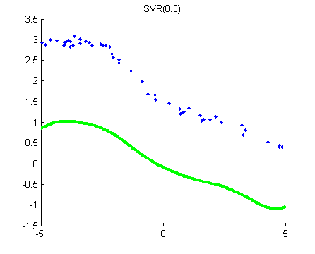
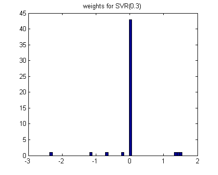
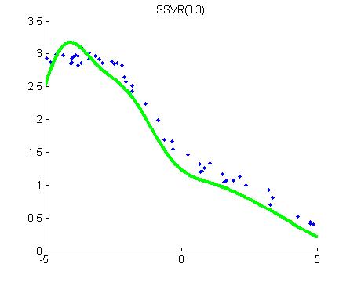
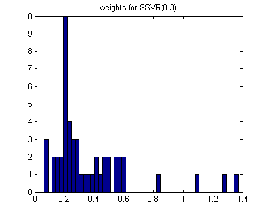

nVars = 1;
nInstances = 50;
setSeed(0);
[X,y] = makeData('regressionNonlinear',nInstances,nVars);
X = [ones(nInstances,1) X];
nVars = nVars+1;
lambda = 1e-2;
rbfScale = 1;
for lossType = 1:2
Krbf = kernelRBF(X,X,rbfScale);
if lossType==1
changePoint= 0.3;
[uRBF, bias] = svmRegrFit(Krbf, y, changePoint, 1/lambda);
lossStr = 'SVR(0.3)';
else
switch lossType
case 2,
changePoint = 0.3;
funObj = @(u)SSVRLoss(u,Krbf,y,changePoint);
lossStr = 'SSVR(0.3)';
case 3,
changePoint = 0.2;
funObj = @(u)SSVRLoss(u,Krbf,y,changePoint);
lossStr = 'SSVR(0.2)';
case 4,
funObj = @(u)LinregLoss(u,Krbf,y);
lossStr = 'linreg';
end
fprintf('Training kernel(rbf) support vector regression machine...\n');
options.Display = 'none';
uRBF = minFunc(@penalizedL2,zeros(nInstances,1),options,funObj,lambda);
end
weights{lossType} = uRBF;
figure; hold on;
Xtest = [-5:.05:5]';
Xtest = [ones(size(Xtest,1),1) Xtest];
yhat = kernelRBF(Xtest,X,rbfScale)*uRBF;
plot(X(:,2),y,'.');
h=plot(Xtest(:,2),yhat,'g-');
set(h,'LineWidth',3);
if strcmp(lossStr(1:3), 'SVM')
SV = abs(Krbf*uRBF - y) >= changePoint;
plot(X(SV,2),y(SV),'o','color','r');
plot(Xtest(:,2),yhat+changePoint,'c--');
plot(Xtest(:,2),yhat-changePoint,'c--');
legend({'Data','prediction','Support Vectors','Eps-Tube'});
uRBF(SV)
end
title(sprintf('%s', lossStr))
figure; hist(uRBF,50);
title(sprintf('weights for %s', lossStr))
end
placeFigures
Warning: Large-scale algorithm does not
currently solve this problem formulation,
using medium-scale algorithm instead.
Optimization terminated.
Training kernel(rbf) support vector regression machine...
ans =
1 3 5
2 4 -1
   